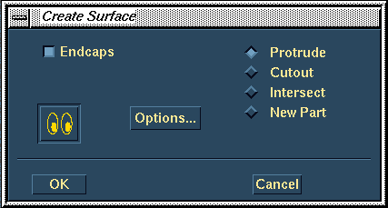

| Next Page | Previous Page | First Page |
SIP on the XY plane of the coordinate system.
Create a Spline with about 4-6 points. DO
NOT constrain the through points.


Sketch on the Workplane the Ellipse. Location is not important. Make the ellipse about the proportion seen in the diagram.

Dynamically Drag the spline to show free
form moment. Don't get any sharp corners.


Sweep the Ellipse down the spline path.
Use the preview to confirm your selection.

Ensure the Endcaps is ON and the Protrude is selected.